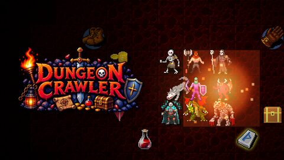
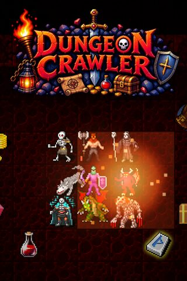
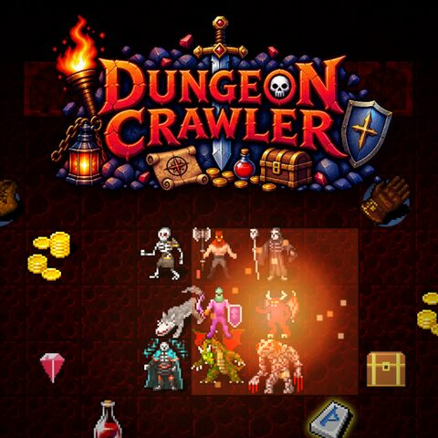
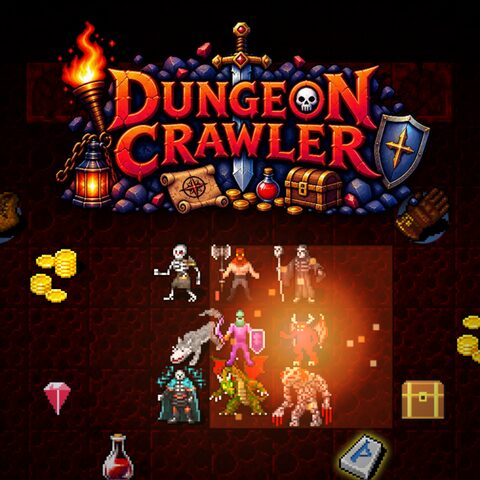
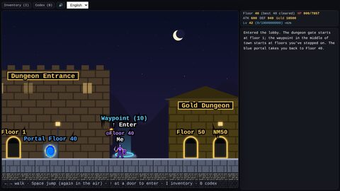
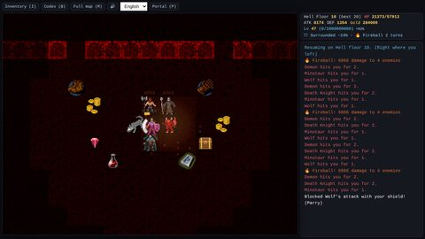
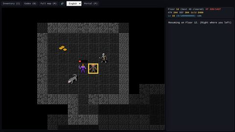
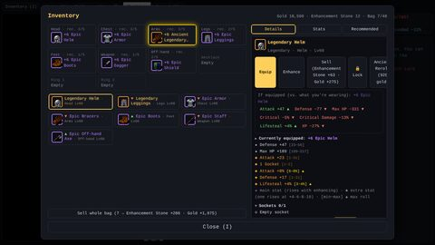
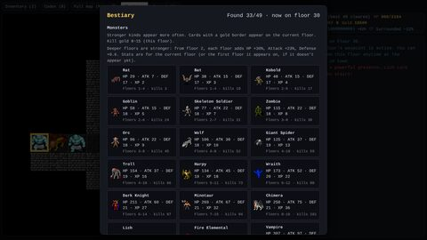

게임 이미지
썸네일


1920×1080 · PNG · 1.4 MB


800×1200 · PNG · 875 KB


800×800 · PNG · 685 KB


1200×1200 · PNG · 1.3 MB
스크린샷


1280×720 · PNG · 170 KB


1280×720 · PNG · 418 KB


1280×720 · PNG · 289 KB


1280×720 · PNG · 145 KB


1280×720 · PNG · 172 KB